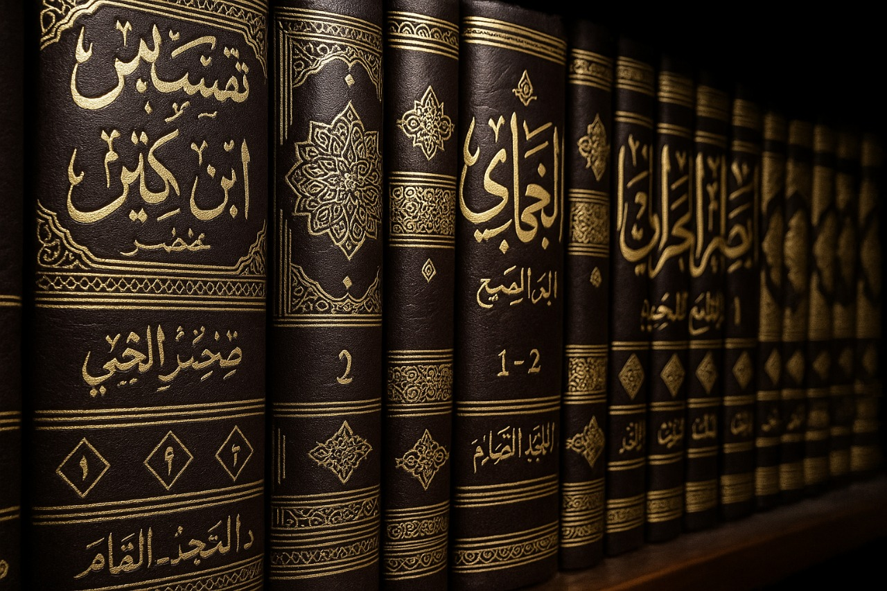
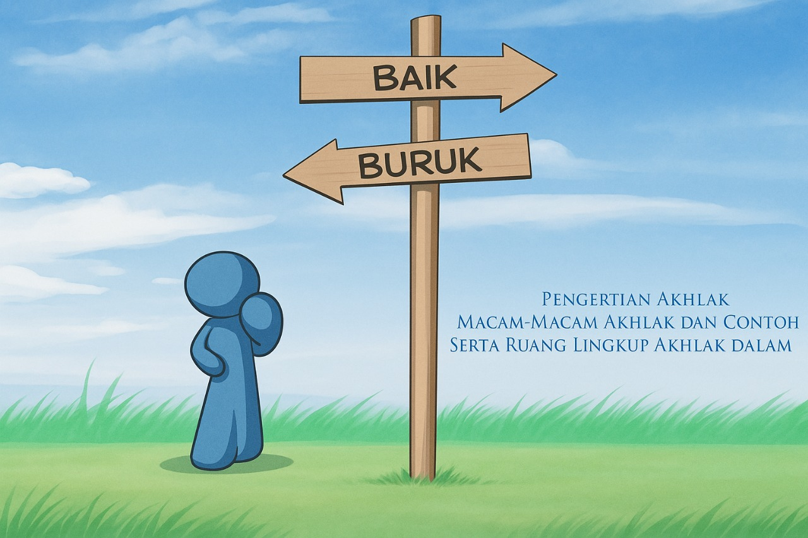
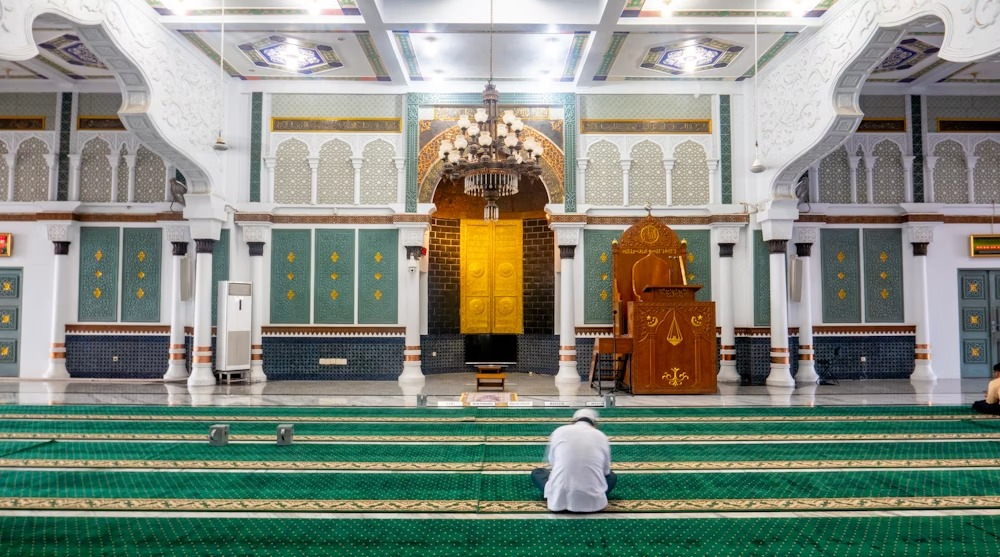
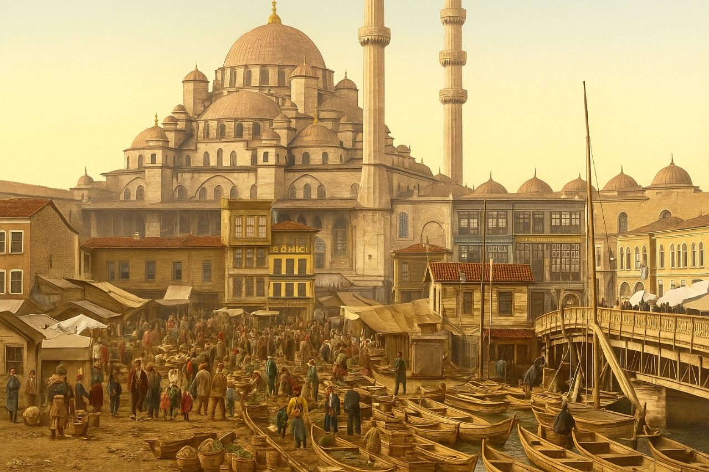
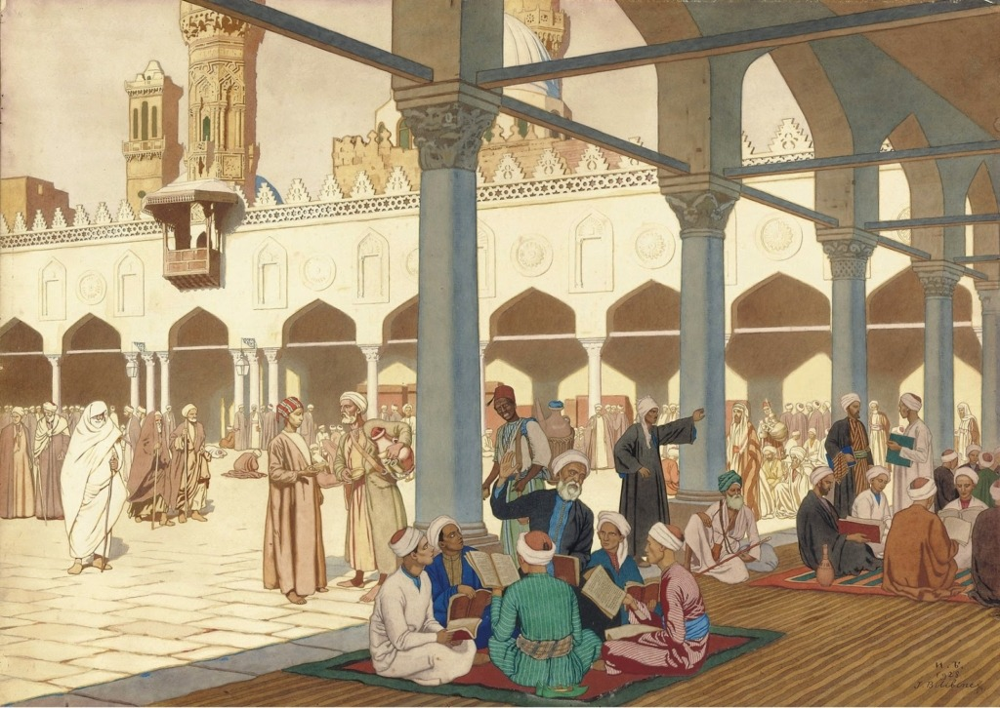

Artikel Materi
Pelajari berbagai materi Pendidikan Agama Islam yang lengkap dan mudah dipahami
Bab 1
Peranan Agama Dalam Kehidupan
Bab 2

Agama Islam Dan Arti Sesungguhnya Makna Jihad
Bab 3
Sumber Ajaran Islam (Al Qur'an)
Bab 4

As-Sunnah/Al-Hadist sebagai Sumber Ajaran Islam
Bab 5

Sumber Ajaran Islam (Al-Ijtihad)
Bab 6

Ruang Lingkup Ajaran Islam (Aqidah, Syariah)
Bab 7

Ruang Lingkup Akhlak Islam
Bab 8
Manusia dan Agama
Bab 9

Hakikat Ibadah Dan Urgensinya
Bab 10

Islam dan Kebudayaan
Bab 11

Islam, Ilmu Pengetahuan dan Teknologi
Bab 12